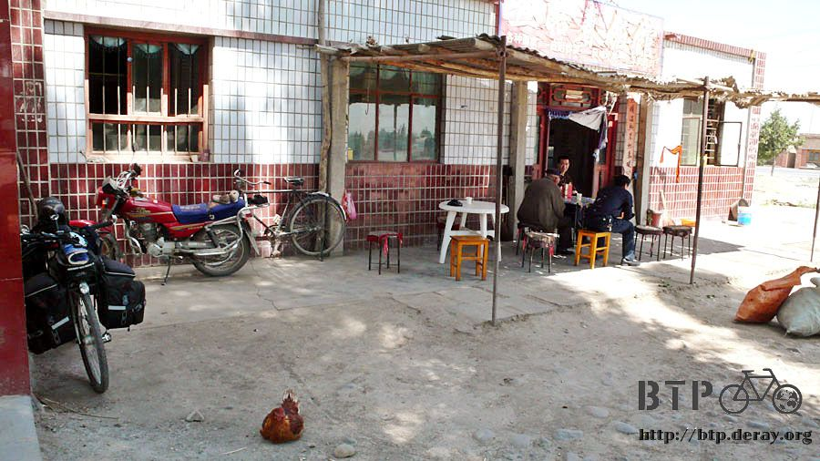

37 degree Celsius
Long day yesterday! I was totally worn out after finishing the text part of the trip log,
and then fell asleep immediately. The photos were added to the log this morning,
so I did not hit the road till 8:30am. To me, Wuwei was just a place I slept over.
For your information, the average amount of time I spend on a trip log is 2 to 3 hours.
On the way out of Wuwei, I had eight-treasure porridge and two tasty deep-fried Chinese doughnuts for breakfast.
The porridge was not sweet, but I could sugar it as much as I liked to make it yummy. The solid doughnuts filled me up.
Today’s weather was opposite of yesterday’s. Yesterday I had a terrible headwind, but mild sun.
Today, the temperature rose to 30 degree Celsius in the early morning.
However the wind became gentle breeze at my back and pushed me forward slowly.
I did not feel quite up to snuff today, probably because of the gentle uphill from Wuwei to Zhangye.
The uphill road seemed flat, but it was quite difficult to ride,
which gave me an illusion that I could not even speed up on a flat road.

So, it was quite pleasing to hide from the baking hot sun for lunch at noon.
While waiting for my stir-fry noodle,
I was bored and started counting the chickens in the yard, totalling 13 of them (two were white).
I only paid five RMB for stir-fry noodles and egg soup.
The soup was “customer-made”, because the locals just drank noodle water.
The sun was high and shining. I watched TV news at the hotel before set off this morning.
It said today’s temperature would be about 35 degree Celsius, and the humidity was only 10%.
I guessed I should expect very dry weather.
A lunch followed by an ice pop was the best way to beat the summer heat.
I became an ice pop expert after having so many ice pops.
Some products were super yucky, such as ice cream sticks.
They tasted like vesicant, totally gross. Therefore, I stuck to the ice pop series.
Iced colored sugar water - how bad could it be?
The scenery was dull along the way, and so was the ride.
Not even a trivial event like “my hat got blown away” happened.
If nothing interesting happened, how can I write an entertaining trip log?
At the railroad crossing where no gate existed, freight trains always slow down and blast their horn to alert motorists.
Yongchang was a larger city along the way where I took a picture of the statues.
“Aren’t they Zhang Qian, the imperial envoy of the Han Dynasty, and his foreign friends?”
When the temperature hit 37 degree Celsius around 2:00 or 3:00pm, the road started melting in the heat.
A pickup truck and two road workers spread gravel on the melting road. When cars went by,
they rolled the gravel into the tar. Therefore, the tar won’t coat the tires.
It was 240 km from Wuwei to Zhangye.
My plan was to make it a two day ride, 120 km per day.
It was 5:30pm already, very tedious the whole day today.
I just had to ride another 10km before finding a place to sleep.
When I was going to call it a day, I got lost.
Route 312 became a road under construction with a detour sign “Road Under Construction, Please Detour”.
There was another road for traffic beside it. I did not want to have a detour because I was quite ready to stop.
I asked a road worker if I could ride on the road under construction,
he said “Yes, but be careful”. I thought I saved the annoyance of detour and got back on Route 312.
The truth was the road under construction was a local road, Z59 or something.
The road beside it was THE Route 312. I was not aware of it till I had finished the 6 km construction site.
I was reluctant to ride back on the lousy road, so I kept riding. Hopefully,
this local road could take me back to Route 312 – Please! Please!

The scenery along the local road became lovely and was much better than the main roads.
Riding on a local road is a bit of treat.
My hat got blown off into the river by the gust of wind and swept away by the water which caused a small ripple in an ordinary day.
I felt sorry for my hat. Even though it was a cheap five-RMB hat, it blocked the afternoon sun for me.
I had no idea what to do without it. Maybe look for a similar one in the next major city.
Along the way, I could also buy a scarf to cover up my face.
As long as I could find a hotel to stay overnight at the midpoint of the two days trip,
I would be on track. Just in case I did not find a place to stay before 8:00pm, I would camp here tonight.
I started seeing strange mud walls, about 30 meters in length and 5 meter in width,
covered with straw mats with two doors on each side. Some mats were unfolded to let the sunlight in.
Was it a sheep pen? Beats me!!!
It started cooling down after 5:00pm. During the day,
even though I put on gloves and long bike pants,
I was burned by the sun. I even smelled scorched to myself.
And then, a few dirt houses, like the ruin of Pompeii, appeared. People did live in these houses.
And then, a few dirt houses, like the ruin of Pompeii, appeared. People did live in these houses.
I asked “Where and how far can I find a place to eat and sleep?”
The local person said “Hongshanyao at the foothill” [Note: Yao in Chinese means kiln].
The name reflects the area where there were many cute traditional kilns.
I wondered what kind of earthenware was fired here.
At around 7:30pm, I rode back to a place with signboards and shops, a small bustling town.
I found a newly opened restaurant with firecracker paper still on the ground where I could also sleep over.
Because the room was cheap, ten RMB for one night, I could spare some money for good food.
I had scallion scrambled egg, pork in garlic sauce, and noodles for dinner.
The restaurant did not make any soup. To quench my thirst, I had a soda and a juice.
After taking with my order, the store owner went to a market and brought back a bunch of scallion and a box of eggs.
Wow! Food here was not only freshly cooked but also freshly bought.
I got some good news at dinner that I could get back to Route 312 from Hongshanyao, the town I did not expect to visit.
Too lazy to shower, I would clean up myself in Zhangye tomorrow, a major oasis city.